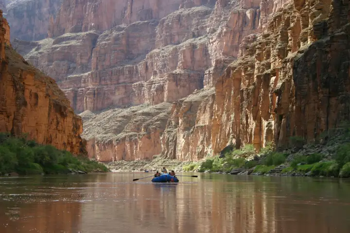

River guides
One page per run: the live number and what it means for that river, how to get there, who drives the shuttle, how the permit and the camps work, and the number to text from your inReach once the signal is gone. The reading on each card is live.
Middle Fork of the Salmon
Boundary Creek to Cache Bar. Class III–IV snowmelt through the Frank Church, hot springs every day or two.

Main Salmon — River of No Return
Corn Creek to Carey Creek. Big warm water, white sand beaches, the 400-mile shuttle, camps assigned at the 9 AM meeting.

Lower Salmon Gorge
Hammer Creek to Heller Bar. No lottery, four canyons, the biggest sand camps in the West, and Slide Rapid above 20,000 cfs.

Grand Canyon of the Colorado
Lees Ferry to Diamond Creek. Dam releases that cycle daily, Lava Falls at mile 179, the Hualapai take-out.

Every other run LateBoof answers for is in the gauge directory. Come-in forecasts for the Stikine and the Sierra runs live on the Oracle. Save 866-284-5181 before you drive in; see how it works.